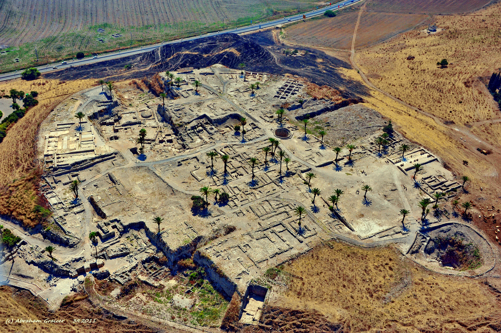

¿Qué pasa cuando lo que dice la Biblia y lo que sale de la tierra no coinciden? La arqueología abrió un diálogo —a veces tenso— con el texto sagrado. Empieza una nueva etapa del blog.
Durante seis series hemos leído la religión de Israel a través de sus textos: cómo se escribieron, editaron y transmitieron. Ahora cambiamos de herramienta. Dejamos la pluma y tomamos la pala. Esta nueva etapa del blog se apoya en la obra que revolucionó la divulgación del tema —La Biblia desenterrada, de Israel Finkelstein y Neil Silberman (2001)— para preguntar algo incómodo y fascinante: cuando excavamos la tierra de Israel, ¿confirma lo que cuenta la Biblia, o cuenta otra historia?

La arqueología del Cercano Oriente gira en torno a una palabra: tell (en hebreo tel, en árabe tell). Es una colina artificial, formada por la acumulación de ciudades construidas una sobre las ruinas de la anterior, durante milenios. Cada vez que una ciudad era destruida o abandonada, la siguiente se levantaba encima, aplanando los escombros. El resultado, visto en corte, es una tarta de capas —y cada capa, o estrato, es una época—.
Este es, literalmente, el principio que da nombre a este blog. Excavar un tell es leer el tiempo de arriba hacia abajo: lo más reciente arriba, lo más antiguo en el fondo. Prueba a explorar uno:
Cada estrato deja pistas: cerámica (que se data por su estilo), muros, cenizas de incendios, semillas, huesos. Combinando esos indicios con el carbono-14, los arqueólogos fechan cada capa. Y aquí empieza la tensión: esas fechas de la tierra no siempre coinciden con las fechas del texto.
El corazón de esta serie es un choque de métodos. Durante siglos, la única fuente sobre el antiguo Israel fue la propia Biblia. La arqueología moderna aportó una segunda fuente, independiente y muda: no tiene intención teológica, no quiere probar nada; solo son objetos en el suelo. Cuando ambas fuentes coinciden, magnífico. El problema —y la aventura— empieza cuando divergen.
Conviene entender la postura de Finkelstein sin caricaturizarla, porque es más sutil de lo que suele contarse. No dice “la Biblia miente” ni “nada de esto ocurrió”. Dice algo más matizado: que muchos relatos bíblicos fueron escritos o reelaborados siglos después de los hechos que narran, con fines teológicos y políticos de su propio presente —y que por eso proyectan hacia el pasado una realidad que la arqueología no siempre respalda—. La Biblia sería, en esta lectura, menos una crónica y más una obra de identidad nacional, riquísima, pero no un manual de historia.
Hay dos formas de saber qué pasó en el antiguo Israel: leer la Biblia, y excavar la tierra. Este blog, en su nueva etapa, compara ambas. A veces se dan la mano; a veces se contradicen. Y cuando se contradicen, hay que decidir a quién creer —y por qué—.
Aquí una advertencia que recorrerá toda la serie, y que es cuestión de honestidad. Finkelstein es un arqueólogo de primera línea, pero no es la última palabra: es una voz —brillante y polémica— dentro de un debate muy vivo. Frente a él, arqueólogos igualmente serios como Amihai Mazar o William Dever defienden posiciones distintas, a menudo más cercanas al relato bíblico. Y hallazgos recientes, posteriores al libro, han recalibrado la discusión.
Por eso, en esta serie, cada afirmación polémica vendrá con una herramienta nueva: un medidor de consenso, que muestra dónde está el peso de la opinión académica —de lo firmemente establecido a lo hondamente discutido—. Porque el rigor no consiste en elegir un bando, sino en mostrar el mapa completo del desacuerdo. Un ejemplo, sobre la tesis de fondo de esta serie:
Ese pequeño instrumento —que verás a lo largo de la serie— es nuestra brújula. No te dice qué creer; te dice cuán firme es el terreno bajo cada afirmación.
En las próximas entregas bajaremos a los casos concretos, y son de los más apasionantes de la arqueología. El Éxodo y la conquista de Canaán: ¿hay rastro de dos millones de personas cruzando el desierto, o de las murallas de Jericó cayendo? El reino de David y Salomón: ¿un imperio esplendoroso o un modesto cacicazgo de las colinas? Y la gran tesis final: el rey Josías y cómo su reforma pudo dar forma a buena parte del Pentateuco.
Cada uno de esos casos es una excavación donde el texto y la tierra se miran cara a cara. Empezaremos por el más famoso de todos: la salida de Egipto.
Esta serie se basa en La Biblia desenterrada (Finkelstein y Silberman, 2001), pero la pone en diálogo con sus críticos. La existencia de la estratigrafía de los tells y el método de datación son consenso pleno; las interpretaciones históricas de Finkelstein son una posición influyente pero debatida.
Voces del debate: frente a la “cronología baja” de Finkelstein, Amihai Mazar propone una “cronología modificada”, y William Dever y Yosef Garfinkel defienden mayor historicidad. El libro es de 2001; hallazgos posteriores (como Khirbet Qeiyafa) han recalibrado partes del debate, y esta serie lo tendrá en cuenta con datos actuales.
El “medidor de consenso” es una herramienta divulgativa propia de este blog: sintetiza el estado de la discusión de forma visual, sin sustituir la lectura de los especialistas. Este artículo describe historia y método, con respeto por el valor cultural y espiritual de la Biblia.